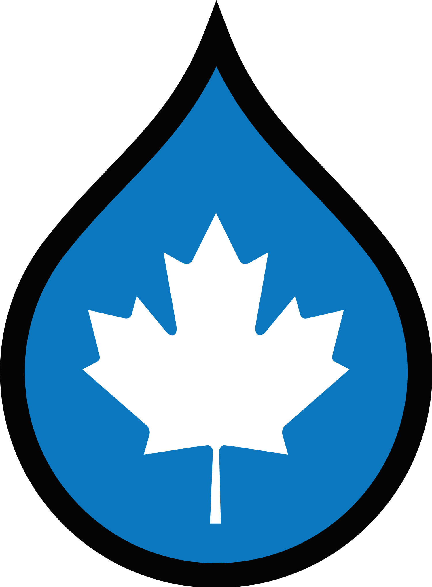

Making Drupal More Accessible
A Panel Discussion
Drupal North 2019
Denis Boudreau
- Expert member of the World Wide Web Consortium (W3C)
- In the Education and Outreach Working Group (EOWG)
- Certified Professional in Web Accessibility (CPWA)
- Has been advocating inclusion for people with disabilities and the elderly on the Web for over 19 years
- A shameless geek with a fixation on inclusive design
Mike Gifford
- Founder and President of OpenConcept Consulting
- Open Concept specializes in Drupal and has over 16 years of experience in architecting secure, scalable, inclusive and sustainable solutions for the non-for-profit, public and private sectors
- Drupal’s Core Accessibility Maintainer since 2012
- Has spearheaded accessibility improvements in Drupal since 2008
Laura Johnson
- Senior Software Developer and Drupal Mentor at Myplanet
- Has been a Drupal developer for over 10 years
- Wrote an article in 2018 on Comparing Automated Accessibility Testing Tools
- Wrote an article in 2019 on Web Accessibility + Machine Learning
- Organizer of Drupal North
Is Drupal really the most accessible CMS out there?
How would we know? What would that mean?
What are you excited about in WCAG 2.1, 2.2 and Silver?
What should developers know going ahead? How quickly will it change?
What is this Bill C81 thing and how does it apply to me?
What affects do you hope it will have for creating a more accessible Canada?
AI: how much is hype?
Where can we realistically see AI being used in our web projects in the near future?
Denis Boudreau
@dboudreau
Mike Gifford
@mgifford
Laura Johnson
@ltrain_johnson